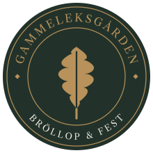
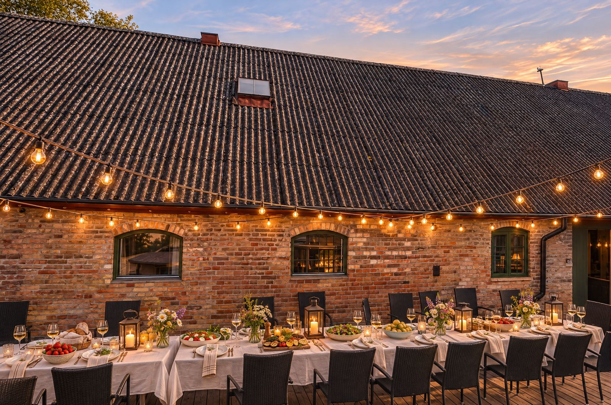

Mariage à la fermecérémonie, dîner et nuit au même endroit
Dites oui sur la pelouse, dînez dans la salle des fêtes et laissez vos invités dormir dans les 20 chambres de la ferme. Le lendemain, vous vous retrouvez autour du café du matin avant que chacun reparte.

Le lieu
Faire le tour de la salle des fêtes
Prenez l'apéritif sur la terrasse après la cérémonie, retrouvez-vous au bar et dînez dans la grande salle, où l'on peut aussi danser.

Grande salle dressée (illustration) La salle dressée numériquement pour un dîner, telle qu'elle pourrait être lors de votre fête. Le reste de la pièce est tel que photographié.
Faites glisser l'image pour regarder autour de vous. Cliquez sur les anneaux au sol pour avancer.
Exemples de mise en place
Illustrations : nos propres photos de la salle, dressées numériquement pour montrer le rendu possible. Vous dressez et décorez vous-mêmes ou avec un traiteur.



Toute la ferme pour vous
Pour les grands mariages, vous pouvez louer toutes les chambres, afin que seuls vos invités logent à la ferme ce week-end-là.
Simple pour les invités
Les invités réservent eux-mêmes leurs chambres avec un code de mariage, au prix que vous avez négocié.
Près de Copenhague
Les invités danois et internationaux rejoignent la ferme en moins d'une heure depuis Kastrup.


Demande
Parlez-nous de votre mariage
Nous revenons vers vous avec les dates disponibles, le prix de la salle et des chambres, et des suggestions de traiteurs partenaires.
Merci , nous vous répondons
Vous recevez les dates disponibles et une proposition de déroulement sous un jour. Dans le prototype, rien n'est réellement envoyé.